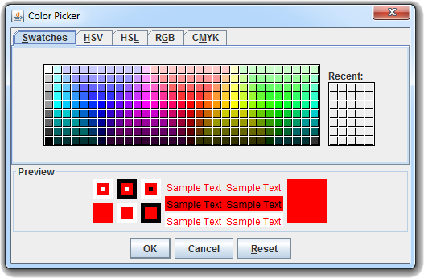
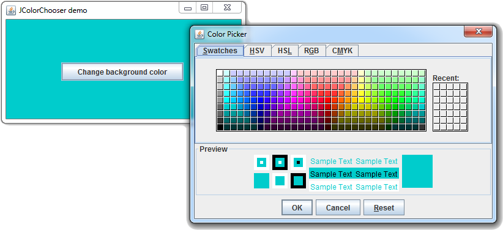
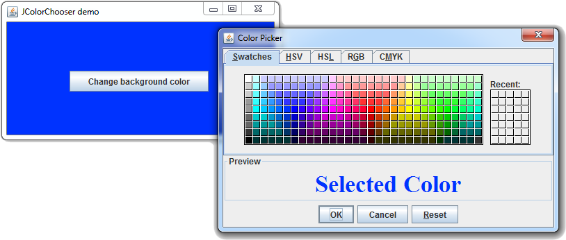

Java Swingالكلاس JColorChooser
مقدمة
الكلاس JColorChooser يستخدم للحصول على Panel جاهزة و مخصصة لإختيار الألوان.
في العادة يتم إظهار Panel الألوان في JDialog عند النقر على زر مخصص لإختيار الألوان.
الـ Panel الذي يحتوي على Panel الألوان يسمى (Color Chooser Dialog).
بناؤه
public class JColorChooser
extends JComponent
implements Accessible
كونستركتورات الكلاس JColorChooser
الجدول التالي يحتوي أهم الكونستركتورات الموجودة في الكلاس JColorChooser.
| الكونستركتور مع تعريفه |
public JColorChooser()
ينشئ كائن من الكلاس JColorChooser يمثل Panel مخصصة لإختيار الألوان.
هنا يكون اللون الأبيض مختار بشكل إفتراضي. |
public JColorChooser(Color initialColor)
ينشئ كائن من الكلاس JColorChooser يمثل Panel مخصصة لإختيار الألوان مع تحديد اللون الذي يكون مختاراً بشكل إفتراض.
مكان الباراميتر initialColor نضع كائن من الكلاس Color يمثل اللون الذي سيكون مختاراً بشكل إفتراضي. |
دوال الكلاس JColorChooser
الجدول التالي يحتوي على أهم الدوال الموجودة في الكلاس JColorChooser.
| الدالة مع تعريفها |
public Color getColor()
ترجع اللون المختار في كائن الـ JColorChooser الذي قام باستدعائها ككائن من الكلاس Color. |
public void setColor(Color color)
تستخدم لتحديد اللون الحالي في كائن الـ JColorChooser الذي باستدعائها.
مكان البارميتر color نضع كائن من الكلاس Color يمثل اللون الذي سيتم إختياره. |
public void setColor(int red, int green, int blue)
تستخدم لتحديد اللون الحالي في كائن الـ JColorChooser الذي قام باستدعائها.
مكان الباراميتر red نضع رقم بين 0 و 255 يمثل درجة اللون الأحمر. مكان الباراميتر green نضع رقم بين 0 و 255 يمثل درجة اللون الأخضر. مكان الباراميتر blue نضع رقم بين 0 و 255 يمثل درجة اللون الأزرق.
ترمي الإستثناء IllegalArgumentException في حال تم تمرير قيمة أصغر من 0 أو أكبر من 255 مكان أي باراميتر موجود فيها. |
public static Color showDialog(Component component, String title, Color initialColor)
تظهر Dialog يحتوي Panel جاهزة و مخصصة لإختيار الألوان, بالإضافة إلى ثلاث أزرار Ok, Cancel و Reset.
ترجع درجة اللون المختار مكان إستدعاءها إذا قام المستخدم بالنقر على الزر Ok.
و ترجع القيمة null في حال نقر على زر الخروج أو على الزر Cancel.
مكان الباراميتر component نضع الـ Frame التي نريده أن يظهر بداخلها. أو نضع null لجعله يظهر في وسط شاشة المستخدم. مكان الباراميتر title نضع نص يمثل عنوان الـ Dialog الذي سيظهر. مكان الباراميتر initialColor نضع كائن من الكلاس Color يمثل اللون الذي سيكون مختاراً بشكل إفتراضي.
ملاحظة: في حال قام المستخدم بالنقر على Ok أو Cancel فإنه يتم إخفاء الـ Dialog و مسحه من الذاكرة.
و في حال قام بالنقر على Reset فإنه يتم إختيار اللون الذي كان مختاراً عندما تم إظهار الـ Dialog. |
public static JDialog createDialog(
Component component,
String title,
boolean modal,
JColorChooser chooserPane,
ActionListener okListener,
ActionListener cancelListener)
ترجع Dialog جديد يحتوي Panel جاهزة و مخصصة لإختيار الألوان, بالإضافة إلى ثلاث أزرار Ok, Cancel و Reset.
مكان الباراميتر component نضع الـ Frame التي نريده أن يظهر بداخلها. أو نضع null لجعله يظهر في وسط شاشة المستخدم. مكان الباراميتر title نضع نص يمثل عنوان الـ Dialog الذي سيظهر. مكان الباراميتر modal نضع false في حال أردنا جعل المستخدم قادر على التعامل مع الـ Frame و الـ Dialog في نفس الوقت.
و نضع true لجعله قادر على التعامل مع الـ Dialog فقط عندما يكون ظاهراً. مكان الباراميتر chooserPane نضع كائن من الكلاس JColorChooser. مكان الباراميتر okListener نضع كائن من الكلاس ActionListener يمثل ما سيحدث عند النقر على الزر Ok. مكان الباراميتر cancelListener نضع كائن من الكلاس ActionListener يمثل ما سيحدث عند النقر على الزر Cancel.
ملاحظة: في حال قام المستخدم بالنقر على Ok أو Cancel فإنه يتم إخفاء الـ Dialog لكن لا يتم مسحه من الذاكرة.
و في حال قام بالنقر على Reset فإنه يتم إختيار اللون الذي كان مختاراً عندما تم إظهار الـ Dialog. |
أمثلة شاملة
المثال الأول
المثال التالي يعلمك طريقة إظهار Color Chooser Dialog و معرفة اللون الذي قام المستخدم بإختياره منه.

شاهد المثال »
المثال الثاني
المثال التالي يعلمك طريقة إظهار Color Chooser Dialog عند النقر على زر معين لإختيار الألوان.
اللون الذي يقوم المستخدم بإختياره سيتم وضعه كخلفية للـ Frame عند النقر على الزر Ok.
في كل مرة يقوم فيها المستخدم بإظهار الـ Color Chooser Dialog سيوضع لون خلفية الـ Frame كاللون الإفتراضي المختار فيه.

شاهد المثال »
المثال الثالث
المثال التالي يعلمك طريقة إنشاء الـ Color Chooser Dialog مرة واحدة و إظهاره فقط عند النقر على زر معين لإختيار الألوان.
بالإضافة إلى تغيير محتوى الـ Preview إلى فقط نص.
اللون الذي يقوم المستخدم بإختياره سيتم وضعه كخلفية للـ Frame عند النقر على الزر Ok.
في كل مرة يقوم فيها المستخدم بإظهار الـ Color Chooser Dialog سيوضع لون خلفية الـ Frame كاللون الإفتراضي المختار فيه.

شاهد المثال »

 محرر الويب
محرر الويب نظام الألوان
نظام الألوان محول الوحدات
محول الوحدات محلل عناوين الشبكات
محلل عناوين الشبكات